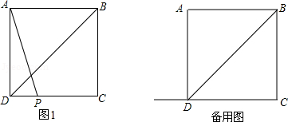
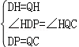
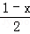
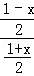
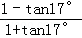
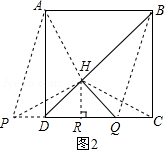
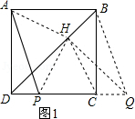

2015年北京市中考数学试题 · 数学解答题 第28题 · 对应解析
28．（7分）（2015•北京）在正方形ABCD中，BD是一条对角线，点P在射线CD上（与点C、D不重合），连接AP，平移△ADP，使点D移动到点C，得到△BCQ，过点Q作QH⊥BD于H，连接AH，PH．
（1）若点P在线段CD上，如图1．
①依题意补全图1；
②判断AH与PH的数量关系与位置关系并加以证明；
（2）若点P在线段CD的延长线上，且∠AHQ=152°，正方形ABCD的边长为1，请写出求DP长的思路．（可以不写出计算结果）

【解答】解：（1）①如图1；
②解法一：如图1，连接CH，
∵四边形ABCD是正方形，QH⊥BD，
∴∠HDQ=45°，
∴△DHQ是等腰直角三角形．
∵DP=CQ，
在△HDP与△HQC中．
∵

，∴△HDP≌△HQC（SAS），
∴PH=CH，∠HPC=∠HCP．
∵BD是正方形ABCD的对称轴，
∴AH=CH，∠DAH=∠HCP，
∴∠AHP=180°﹣∠ADP=90°，
∴AH=PH，AH⊥PH．
解法二：如图1，连接CH，
∵QH⊥BD，
∴∠QHB=∠BCQ=90°，
∴B、H、C、Q四点共圆，
∴∠DHC=∠BQC，
由正方形的性质可知∠DHC=∠AHD，
由平移性质可知∠BQC=∠APD，
∴∠AHD=∠APD，
∴A、H、P、D四点共圆，
∴∠PAH=∠PDH=45°，∠AHP=∠ADP=90°，
∴△HAP是等腰直角三角形，
∴AH=PH，AH⊥PH．
（2）解法一：如图2，
∵四边形ABCD是正方形，QH⊥BD，
∴∠HDQ=45°，
∴△DHQ是等腰直角三角形．
∵△BCQ由△ADP平移而成，
∴PD=CQ．
作HR⊥PC于点R，
∵∠AHQ=152°，
∴∠AHB=62°，
∴∠DAH=17°．
设DP=x，则DR=HR=RQ=

．∵tan17°=，即tan17°=

，∴x=

．解法二：
由（1）②可知∠AHP=90°，
∴∠AHP=∠ADP=90°，
∴A、H、D、P四点共圆，
又∠AHQ=152°，∠BHQ=90°，
∴∠AHB=152°﹣90°=62°，
由圆的性质可知∠APD=∠AHB=62°，
在Rt△APD中，∠PAD=90°﹣62°=28°，
∴PD=AD•tan28°=tan28°．

